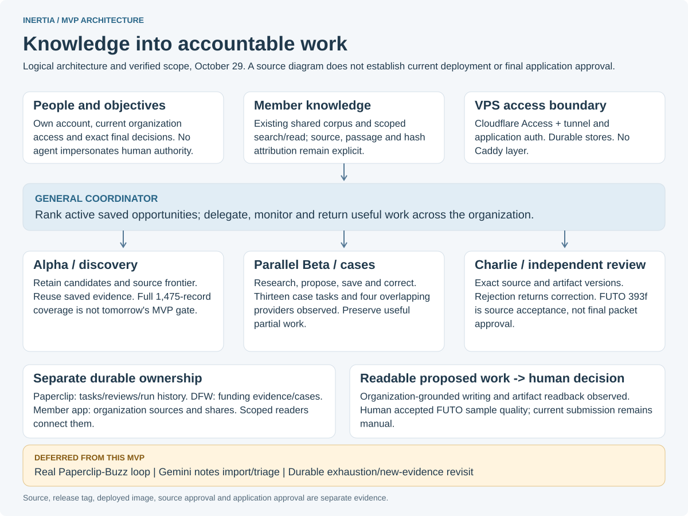

This is a logical source architecture, not a live status dashboard. The FUTO sample met the human's MVP quality bar; Charlie's accepted393f decision is source review, not final application approval. Notes, real Buzz and durable exhaustion/revisit remain deferred.